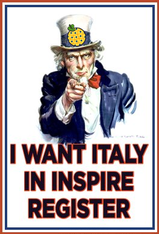

Premessa
INSPIRE prevede che ogni Stato Membro fornisca almeno un endpoint nazionale per il discovery di metadati.
Ad oggi, la maggior parte degli Stati Membri (22 su 28) ha soddisfatto questo requisito registrando il proprio riferimento nazionale nel geoportale INSPIRE: http://inspire-geoportal.ec.europa.eu/INSPIRERegistry/
In particolare, come si può vedere, alcuni paesi hanno registrato più di un endpoint, come l'Austria, il Belgio e la Lettonia: è infatti possibile registrarne anche più di uno per paese.
A differenza di ciò, l'Italia non ha ancora alcun endpoint registrato per il servizio di discovery.
Per questa registrazione è necessaria una semplice comunicazione (email) del National Contact Point INSPIRE (o di qualcuno delegato dal NCP) indirizzata a EC/EEA INSPIRE Team (env-inspire@ec.europa.eu) ed per conoscenza JRC (michael.lutz@jrc.ec.europa.eu). [1]
Domanda
Perché il servizio CSW realizzato da RNDT non è ancora stato registrato come endpoint italiano?
Dal punto di vista normativo, sia il recepimento della Direttiva INSPIRE (Dlgs. 32/2010) che il Codice dell'Amministrazione Digitale riportano che RNDT è il riferimento nazionale in questo contesto: "Il repertorio nazionale dei dati territoriali, [...] costituisce il catalogo nazionale dei metadati relativi ai set di dati territoriali" (Dlgs. 32/2010, art.5)[1].
Dal punto di vista tecnico-operativo, invece, [2] [3] i test effettuati nel luglio 2013 e gennaio 2014 dal Joint Research Centre della Commissione Europea (su richiesta dell'Agenzia per l'Italia Digitale) hanno dimostrato che il servizio CSW del RNDT e la quasi totalità dei metadati raccolti sono perfettamente conformi a quanto previsto dai Regolamenti 1205/2008[2] (metadati) e 976/2009[3] (servizi di rete) della Commissione Europea, nonché alle relative Technical Guidelines (1.2 del 2010[4] per i metadati, e 3.1 del 2011 [5] per i servizi di discovery).
In particolare il test effettuato a gennaio 2014 ha riportato 4412 metadati "passed" e 412 "passed with warnings" su un totale di 5540 metadati sottoposti ad harvesting (nel RNDT i metadati disponibili sono 6143).
Il livello di conformità rispetto a INSPIRE è quasi totale per i metadati di dataset e serie (4415 su 4462).
Questo è un risultato importante ed è da notare che risulta essere migliore rispetto ai risultati ottenuti da altri Stati Membri.
Il report completo è disponibile a questo indirizzo: http://inspire-geoportal.ec.europa.eu/resources/sandbox/INSPIRE-dc160d85-7f54-11e3-9486-d8d3855bd8fc_20140117-095358/services/1/PullResults/
Sottolineiamo che è importante che la registrazione del servizio sia fatta al più presto perché:
- la disponibilità dei metadati italiani nel catalogo europeo serve a dare visibilità alle informazioni territoriali esistenti in Italia, il tutto proiettato a
- supportare le politiche ambientali nazionali e comunitarie
- favorire la conoscenza e la promozione del nostro territorio;
- l'iniziale disponibilità di metadati potrà innescare un processo virtuoso spingendo gli enti pubblici di ogni livello a conferire i metadati all'RNDT per far conoscere le attività dell'amministrazione su scala internazionale;
- per incentivare la realizzazione di servizi innovativi da parte di professionisti, consulenti e PMI locali da offrire agli enti locali sulla base della disponibilità di dati;
- per istanziare il ruolo del "nodo" Italia all'interno della rete;
- per dare riconoscimento e visibilità alle persone che, su scala diversa, hanno attivamente operato per la realizzazione dell'infrastruttura e dei servizi.
Conclusioni
Alla luce di queste considerazioni, esortiamo il NCP INSPIRE italiano a comunicare al più presto al JRC l'indirizzo del servizio CSW di RNDT affinché questo venga registrato come primo endpoint italiano in INSPIRE.
- Giovanni Allegri
- Andrea Antonello
- Andrea Borruso
- Associazione italiana per l'informazione geografica libera - GFOSS.it
- Stefano Campus
- Giovanni Ciardi
- Piergiorgio Cipriano
- Bruno Conte, Social4Social
- Simone Cortesi
- Laura Criscuolo
- Antonio D'Argenio, Nadir
- Alessio Di Lorenzo
- Antonio Falciano
- Sergio Farruggia, Stati Generali dell'Innovazione, AMFM GIS Italia
- Daniela Ferrari
- Maurizio Foderà, Kartoblog
- Antonio Fregoli, MNDAssociation
- Pietro Blu Giandonato
- Cesare Gerbino
- Simone Giannecchini
- Nicola Guarino, ISTC-CNR
- Simone Lella
- Jody Marca
- Flavia Marzano, Stati Generali dell'Innovazione e Rete WISTER
- Giacomo Martirano, Epsilon Italia, coordinatore progetto smeSpire
- Stefania Morrone, Epsilon Italia
- Alessandro Oggioni
- Lorenzo Perone
- Emma Pietrafesa, Stati generali innovazione (Rete WISTER)
- Angelo Quaglia
- Monica Sebillo, AMFM GIS Italia
- Gian Bartolomeo Siletto
- Claudia Spinnato, Consorzio TICONZERO
- Franco Vico, AMFM GIS Italia
- Fabio Vinci, Epsilon Italia
- Massimo Zotti